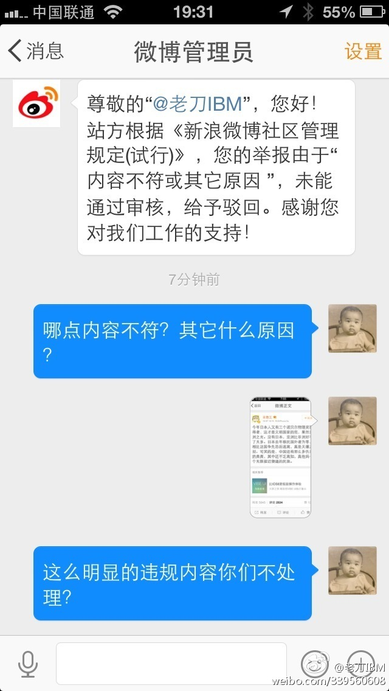

我觉得吧，言论涉及到攻击个人的，平台需要管。但是攻击一个族群的话，属于观点，平台确实不应该管。//@老刀IBM:所以需要大家都站出来，谴责无良媒体！@公安部打四黑除四害 @平安北京 //@语重歆长:我之前也举报过几次，也是证据确凿但无疾而终，有时候真觉得媒体就在纵容甚至故意煽动类似的话题@老刀IBM:渣浪，你的节操还剩多少？！我举报这种无耻、下作的内容，微博管理员居然告诉我“内容不符或其它原因”。那你给我说清楚什么叫内容不符，解释下究竟是其它什么原因导致你们长期纵容和包庇这些猖獗的帐号！@微博管理员 @老沉 不要装睡，为虎作伥、当心遭报应！ 